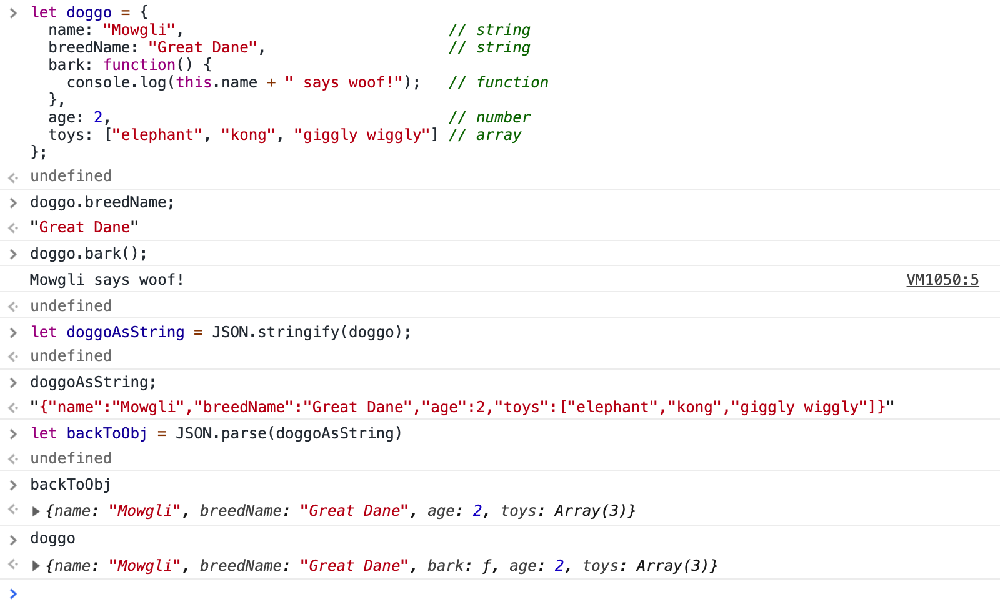
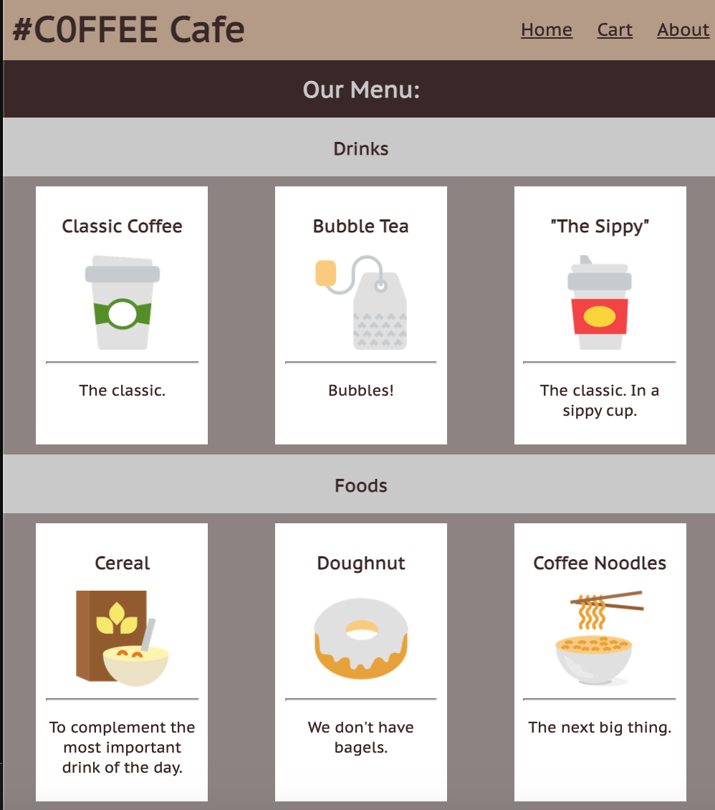
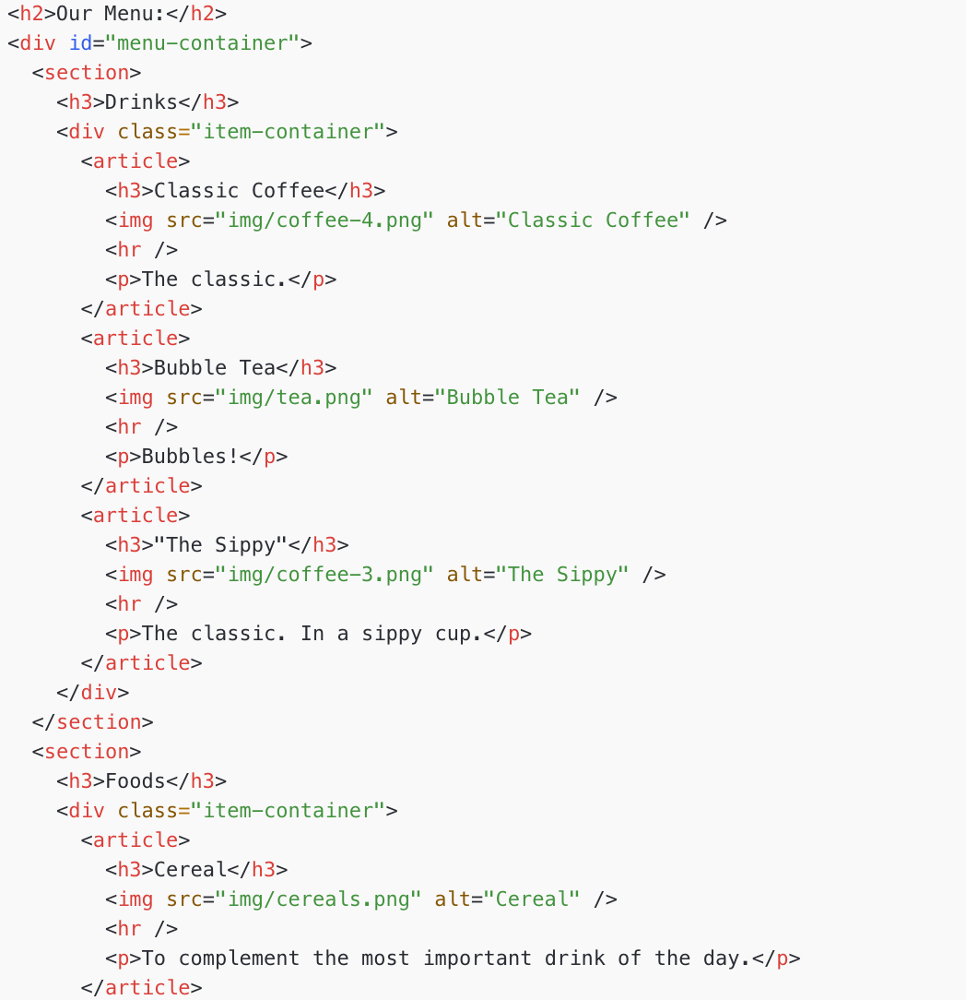
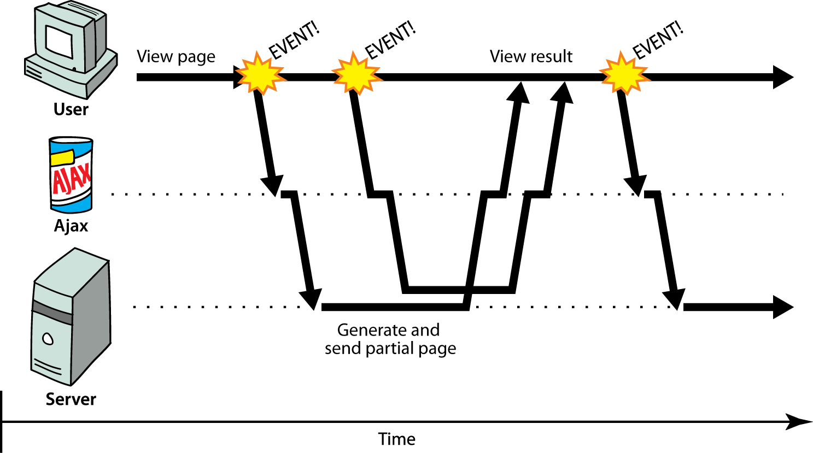

Lecture 4
Asynchronous Programming with AJAX
Agenda
Callbacks: What are JS functions really?
Promises: Capturing uncertainty in a nice little package
JSON: Structured data (common response from APIs)
fetch and APIs: Using Promises to fetch JSON data from the web!
JS: Adding Interacitvity to Webpages
Your browsers runs JS to communicate with:
- Users: Interactions between events and the DOM
btn.addEventListener("click", sayHello);fetch("https://api.nasa.gov").then(...)Whereas in a language like Java, programs often have a well-defind specification (behavior), JS has to deal with uncertainty (weird users, unavailable servers, no internet connection, etc.)
Asynchronous Programming
The JS programs we've been writing are naturally asynchronous
We pass functions as arguments to other functions so that we can “call back later” once we know something we expect occurred.
We've already been writing asynchronously!
Our first example of handling "uncertain" behavior was addEventListener("click", openBox)
- Only when the click event occurs does the function execute.
Previously, we introduced setTimeout and setInterval.
- Only when the delay has passed, does the function execute.
Shortly, we will introduce fetch and Promises.
- Only after we receive a response after making a request to an API like NASA, does the function execute.
Looking More Closely at JS Functions
First-class function: Treated just like any other variable type
Can store as variables, pass as arguments to functions, return as values from functions
Defining functions as variables
function callbackFn(params) {
...
}
let callbackFn = function(params) {
...
};
let callbackFn = (params) => {
...
};JS
Regardless of how we create these, we use them the same way.
let result = callbackFn(params);JS
Passing functions as arguments
btn.addEventListener("click", callbackFn);
btn.addEventListener("click", function() {
...
});
btn.addEventListener("click", () => {
...
});
JS
setTimeout(callbackFn, 2000);
setTimeout(function() {
...
}, 2000);
setTimeout(() => {
...
}, 2000);JS
A function that takes another function as an argument (e.g. a callback) or returns a function is called a higher-order function
An Example
Is this a higher-order function?
function askQ(qText) {
let answer = prompt(qText);
if (answer === "yes") {
console.log("You answered yes!");
} else if (answer === "no") {
console.log("You answered no!");
} else {
console.log("I have no idea what " + qText + " means.");
}
}JS
Another Example
Is this a higher-order function?
function askQ(qText, yesFn, noFn, handleError) {
let answer = prompt(qText);
if (answer === "yes") {
yesFn();
} else if (answer === "no") {
noFn();
} else {
handleError(answer);
}
}JS
function yesFn() {
console.log("You answered yes!");
}
function noFn() {
console.log("You answered no!");
}
function handleError(answer) {
console.log("I have no idea what " +
answer + " means.");
}JS
Passing different functions
function askQ(qText, yesFn, noFn, handleError) {
let answer = prompt(qText);
if (answer === "yes") {
// yesFn();
yesFn2();
} else if (answer === "no") {
// noFn();
noFn2();
} else {
handleError(answer);
}
}JS
function yesFn2() {
id("output").textContent = "You answered yes!";
}
function noFn() {
id("output").textContent = "You answered no!";
}
function handleError(answer) {
console.log("I have no idea what " + answer + " means. Try again");
processQuestion();
}JS
Check Your Understanding
Callbacks are a very powerful feature in event-driven programming.
Why do you think it's useful to have the ability in the JavaScript language to pass callback
functions as arguments to other functions like addEventListener and setTimeout in JS?
Check Your Understanding #1
The following is an example program using callback functions and timers.
What do you think is the final output?
(function() {
console.log("Foo 1");
window.addEventListener("load", init);
function init() {
setTimeout(testFunction, 1000);
console.log("Foo 2");
}
function testFunction() {
console.log("Foo 3");
}
console.log("Foo 4");
})();cyu-q4.js
What is the output to the console?
Check Your Understanding #2
This example is a bit more interesting... What do you think is the final output of each call?
JSON: JavaScript Object Notation
A data format that represents data as a set of JavaScript objects invented by JS guru Douglas Crockford of Yahoo! natively supported by all modern browsers (and libraries to support it in old ones)
As we start to use AJAX with APIs, we'll first need to learn about one more JavaScript type: JSON objects
Similar to the strategy you'll want to use when writing your first AJAX program, we'll:
- Practice using JSON in the console
- Use (local) JSON data to generate webpages dynamically
- Request JSON data from APIs using fetch
But first... JavaScript objects
let myobj = {
fieldName1: value1,
...
fieldName: value
};JS (example)
In JavaScript, you can create a new object without creating a "class" like you would need to do in Java. These are similar to dictionaries in Python.
let student = {
name : "Lorem Hovik",
major : "CS",
qtr : "21wi",
classes : ["CS11JS", "CS121", "Math3", "Doggo101"]
};You can add properties to any object even after it is created:
student.bestFriend = "Oppa Hovik";JS (example)
Example of JS Object
let doggo = {
name: "Oppa", // string
breedName: "Mastiff Mix", // string
bark: function() {
console.log(this.name + " says woof!"); // function
},
age: 2, // number
toys: ["hedgehog", "kong", "giggly wiggly"] // array
};
console.log(doggo.toys[1]); // kong
doggo.bark(); // Oppa says woof!
console.log(doggo["breedName"]); // Mastiff Mix
console.log(doggo.breedName]); // Mastiff MixJS (example)
An object can have methods (function properties) that refer to itself as this
can refer to the fields with .fieldName or
["fieldName"] syntax
We won't create JS Objects this class, but you can find more info here.
Examples of JS objects we've seen so far
- DOM elements
document,window
JavaScript Objects vs. JSON
JSON is a way of representing objects, or structured data.
(The technical term is "serializing" which is just a fancy word for turning an object into a savable string of characters)
Browser JSON methods:
-
JSON.parse( /* JSON string */ )-- converts JSON string into Javascript object -
JSON.stringify( /* Javascript Object */ )-- converts a Javascript object into JSON text
Demo converting JS Object to String and JSON
JSON limitations
JSON can't handle certain data types, so these things just fall out of the object if you try to make JSON strings out of them:
- Function
- Date
- RegExp
- Error
Since JSON is ideal for communicating across different types of systems, you can't put Javascript functions in JSON. Other languages wouldn't be able to read JSON effectively if it had Javascript code in it.
(This is also why Dates and RegExps can't go into the JSON object -- other languages wouldn't know how to interpret them for what they are.)
There are a few other JSON rules which you can get more details in the reading.
Numerous validators/formatters available, eg JSONLint
JSON Exercise
Consider the JSON data at the right. Write each statement to get:
- The name of the customer
- The number of meals returned
- The status of the fish
- The last meal object in the array
let data = {
"name": "Jo Smith",
"items": [
{ "fish": "fishy-smelling" },
{ "cheesecake": "a bit burnt" },
{ "chips": "These are computer chips." }
],
"gift": "hamburger",
"table-number": 20
};JSON
Answers
let name = data.name;
// name === "Jo Smith"
let mealCount = data["meal-status"].length;
// mealCount === 4
let fishStatus = data["meal-status"][0]["fish"];
// fishStatus === "fishy"
let lastItem = data.items[data.items.length];
// lastItem = { "chips" : "These are computer chips." }
JS
A Few Other Notes
What if you want to loop through all categories in the following object?
Sometimes, you'll want to loop through a collection of keys.
let menu = {
"categories" : {
"Drinks" : ["Coffee", "Tea", "Espresso"],
"Foods" : ["Cereal", "Toast"]
}
}JSON
You can use Object.keys(obj) to get an array of keys (strings)
You can also use for (let key of obj) { ... } to loop through a collection.
let categories = Object.keys(menu.categories); // ["Drinks", "Foods"]
for (let category of categories) {
console.log(category); // e.g. "Drinks"
console.log(menu.categories[category]); // e.g. ["Coffee", "Tea", "Espresso"]
}JS
So what is JSON used for?
On your own website, it can be used to represent data to generate webpages dynamically
JSON data also comes from many sources on the web:
- web services use JSON to communicate
- web servers store data as JSON files
- databases sometimes use JSON to store, query, and return data
JSON is the de facto universal format for exchange of data
Using JSON for Dynamic Webpages
Implementing a #C0FFEE Cafe Website
Initial Page
What are the limitations of having everything in the HTML for a website with items/products like a cafe?
Part 1: Using JSON as a variable in menu-populator.js
Example menu.json
"use strict";
(function() {
let menu = {
"categories" : {
"Drinks" : [
{ "name" : "Classic Coffee", "description" : "The Classic.",
"image" : "img/coffee-4.png", "in-stock" : true },
{ other drinks... }
],
"Foods" : [ { other foods... } ]
},
};
window.addEventListener("load", populateMenu);
function populateMenu() {
let categories = Object.keys(menu);
for (let category of categories) {
let categorySection = genCategorySection(category);
let div = gen("div");
div.classList.add("item-container");
for (let i = 0; i < categories[category].length; i++) {
let itemData = categories[category][i];
if (itemData["in-stock"]) {
div.appendChild(genItemArticle(itemData));
}
}
}
categorySection.appendChild(div);
id("menu-container").appendChild(categorySection);
}
// rest of program ...
})();JS (partial)
But what's wrong with putting the JSON as a module-global in our JS?
What if we want to feature different menus?
What if other websites want to use the menu data?
Motivating AJAX
The #C0FFEE Cafe Website
Version 1 (HTML): Menu in HTML
Version 2 (JS): Menu in JSON as local variable in JS
Version 3: Using AJAX to fetch from an API
Part 2: Fetching JSON from the web
- What kind of data can we get from the internet?
- How do we request data from the internet?
- What happens when something goes wrong on the internet?
- Can you trust everything you find on the internet?
LET's FETCH ALL THE DATA!!!!!
A ton of examples
Hold your horses
While we are still using JS with JSON, these are new questions that we have to consider.
Data is fun. It's powerful. It drives the modern society. But with great power, comes great responsibility.
Asynchronous programs can be short, but will take some time to conceptualize.
Synchronous vs. Asynchronous Requests
Synchronous Requests

Why are synchronized requests are problematic?
Your code waits for the request to completely finish before proceeding.
It may be easier to program for synchronous behavior, but if our requests were all synchronous, the user's entire browser will lock up until each request finishes. This is really not what we want, especially for pages with many, potentially large or slow requests.
Asynchronous Programs
We've seen asynchronous requests with setTimeout and setInterval
Timer callback functions are called after a fixed delayMs and don't have uncertain behavior
fetch (AJAX) callback functions are not guaranteed to execute after a certain number of seconds, and have two possible states:
- Success ("resolved")
- Failure ("rejected")
Back to the Cafe Demo...
Suppose we knew how to get this JSON from a server instead of storing it in a variable in our client-side JS
What are new potential issues?
- There is no way to now how long the server will take the respond
- Will it even respond?
We need some way to wait for a server to respond and do something with the data afterwards (and handle uncertainty).
Naive Approach: While Loop
makeRequestToServer(url);
while (serverHasNotResponded()) {
// do nothing here, page is frozen
}
let jsonData = getServerResponse().json();JS (psuedocode)
What is the issue with this?
- It stops execution of the JS
- It will freeze the page - other events like clicking will not be called since this will never finish.
Callbacks to the Rescue!
makeRequestToServer(url, function(response) {
// function to callback when server is done processing/responding
let jsonData = response.json();
});JS (psuedocode)
This does not stop execution!
The callback is run only when the server (from url) is done responding, so there is no halting execution of other parts of your JS (just like setInterval/setTimeout!)
What if we wanted to make multiple requests?
makeRequestToServer(firstUrl, dataToServer, function(response1) {
// function to call when server is done responding
let jsonData = JSON.parse(response1);
processResponse1(jsonData, function(processedData1) {
getUserInput(processedData1, function(userReponse) {
makeRequestToServer(secondUrl, userReponse, function(response2) {
processResponse2(response2, function(processedData2) {
// Do something with processedData2.
});
});
});
});
}JS (psuedocode)
Code is very confusing and hard to follow the logical flow of execution and data
What if we could attach callback functions for each step like a pipeline to be easier to follow?
Example with a Cafe API
To ask for data, we will need URL's to request from.
Suppose we had an API we could request JSON from for our Cafe.
To get categories, we would use /categories appended to the URL, which
returns an array of strings.
To get items for a category, we would use /category/<categoryName>
to get an array of objects for each item.
This is pretty similar to the menu variable we used
in our JS! But in this API, the second request (to get item data) depends on the first (category names).
Using Callbacks to Handle Asynchronous Dependencies
function fetchAndPopulateMenu() {
const URL = “https://path-to-cafe-api”;
fetchCallback(url + "/getCategories", function(categories) {
for (let i = 0; i < categories.length; i++) {
let categorySection = genCategorySection(categories[i]);
fetchCallback(url + "/getItems/" + categories[i], function(itemList) {
filterInStockItems(itemList, function(inStockItems) {
for (let i = 0; i < inStockItems.length; i++) {
categorySection.append(genItemData(inStockItems[i]));
}
});
});
}
});
}JS (pseudo-code)
... Callbacks help ensure we have the data before using it, but this isn't easy to read.
What if we were to modify our code? What about handling request errors? It will only get more nested.
The Challenge with Callbacks
Asynchronous programs are great to start tasks immediately without blocking other functions. But when there are dependencies for asynchronous functions, we run into "callback hell".
function order() {
setTimeout(function() {
makeRequest("Requesting menu...");
setTimeout(function() {
makeRequest("Ordering pizza...");
setTimeout(function() {
makeRequest("Checking pizza...");
setTimeout(function() {
makeRequest("Eating pizza...");
setTimeout(function() {
makeRequest("Paying for pizza...");
setTimeout(function() {
let response = makeRequest("Done! Heading home.");
console.log(response);
});
});
});
});
});
});
}JS
Server Requests
makeRequestToServer(firstUrl, dataToServer, function(response1) {
// function to call when server is done responding
let jsonData = JSON.parse(response1);
processResponse1(jsonData, function(processedData1) {
getUserInput(processedData1, function(userReponse) {
makeRequestToServer(secondUrl, userReponse, function(response2) {
processResponse2(response2, function(processedData2) {
// Do something with processedData2.
});
});
});
});
}JS (psuedocode)
Code is very confusing and hard to follow the logical flow of execution and data
What if we could attach callback functions for each step like a pipeline to be easier to follow?
Aside: AJAX the "old way" (XML over HTTP)
Using Javascript to pull in more content from the server without navigating the page to a new url
Although we are showing you this, it is for context only, we will not be using the "XML over HTTP" method of AJAX calls.
let xhr = new XMLHttpRequest();
xhr.open(method, url, [async/sync]);
xhr.onload = function() { /* handle success */ };
xhr.onerror = function() { /* handle failure */ };
xhr.send(); JS (template)
let xhr = new XMLHttpRequest();
xhr.open("GET", "https://thecoffeeshop.com/api/menu");
xhr.onload = function() { alert(this.responseText); };
xhr.onerror = function() { alert("ERROR!"); };
xhr.send();JS (example)
AJAX with the Fetch API
(function(){
...
function doWebRequest() {
const url = ... // put url string here
fetch(url); // returns a Promise!
}
...JS (template)
AJAX with the fetch API
The Fetch API was created in 2014 and incorporated into the global window.
fetch takes a URL string as a parameter to request
data (e.g. menu category JSON) that we can work with in our JS file.
function populateMenu() {
const URL = "https://fathomless-badlands-58662.herokuapp.com/";
fetch(URL + "/menu") // returns a Promise!
.then(...)
.then(...)
.catch(...)
}JS (example)
We need to do something with the data that comes back from the server.
But we don't know how long that will take or if it even will come back correctly!
The fetch call returns a Promise object which will help
us with this uncertainty.
Promises
Turn asynchronous code into re-usable synchronous "objects" that can be (eventually) resolved or rejected while letting the program continue working.
Much easier to manage asynchronous and synchronous tasks without "callback hell"
States of a Promise
Promises have three states:
- Pending: When initially constructed
- Fulfilled: When resolved
- Rejected: When rejected
Can only go from Pending to Fullfilled or Rejected (no takebacks)
Example: “I promise to return to your table"
- Pending: Waiter hasn't yet returned
- Fulfilled: Waiter has returned your order
- Rejected: Kitchen ran out of ingredients
Constructing a JavaScript Promise
let promise = new Promise(executorFn); // syntax
let customPromise = new Promise(function(resolve, reject) {
// do something asynchronous (like make an ajax call, set a timeout)
if (success) {
resolve(result); // Set to fulfilled
} else {
reject(reason); // Set to rejected
}
});JS (template)
Examples of Two Executor Functions
// Always fulfills the promise, calling resolve in 1 second.
function alwaysYesIn1Second(resolve, reject) {
// this function is always certain, don't need to handle reject
setTimeout(() => resolve("Yes"), 1000);
}
function maybeNoIn1Second(resolve, reject) {
setTimeout(() => {
if (Math.random() < 0.5) {
resolve("Success! You get a duck.");
} else {
reject(Error("You lost, no duck."));
}
}, 1000);
}
// a Promise constructor
function maybePromise() {
return new Promise(maybeNoIn1Second);
}JS
Simulating a "Fake Server" Request with a Promise
When we are using a constructed Promise, we can get its resolved value using .then.
function fakeServer(resolve, reject) {
setTimeout(() => {
if (Math.random() < 0.5) {
resolve("Success! Here's a fancy String.");
} else {
reject(new Error("I couldn't fulfill your request :("));
}
}, 1000);
}
let p = new Promise(fakeServer);
p.then(function(result) {
console.log("Promise resolved: " + result);
}).catch(function(result) {
console.log("Promise rejected: " + err);
});JS
Try copy/pasting the above in the Chrome console! What happens which you change the timeout delay?
Using Promises with fetch
We won't be constructing Promises, but will be using them when we fetch information from a
server, which is an uncertain task
The returned Promise contains a value that is a Response from the requested resource,
which we can get then. after the fetch call.
fetch(url).then((resp) => {
// resp is a Response object!
});JS
What's in a Response?
Status Codes
Set by the server
A 2XX status code (e.g. 200, 201, etc.) will indicate a successful request
Other status codes indicate a failure in the request
- 3XX: Redirects
- 4XX: Client errors (400: Bad Request, 403: Forbidden, etc.)
- 5XX: Server errors
Full list here
We can access the status code and status text with the Response object
This is a useful service to test different error codes: https://httpstat.us/
Demo: status-tester.html
The Client-Server Model

The Request/Response Transaction with Web APIs

AJAX fetch Code Skeleton: V1
function fetchTheData() {
let url = URL + possibleParameters;
fetch(url)
.then(function(response) {
if (!response.ok) { // response.status < 200 || response.status >= 300
throw Error("Error in request: " + response.statusText);
}
return response; // only reach here if no Error thrown
})
.then(function(response) {
return response.json(); // for JSON responses
// return response.text(); // for text responses
})
.then(function(data) {
// success: do something with the data (JSON or text)
})
.catch(function(err) {
// error: handle request error (e.g. display message
// on the page)
});
}JS (template)
More on APIs
We'll see various ways to use fetch to request data
from public APIs. But what is an API really?
An application programming interface (API) is a communication protocols that allows two pieces of software to communicate.
A Web API is a set of pre-defined URLs with parameters that allow a user to get information from a web server. Can be used by many types of clients.

Examples of APIs
Fetching data from a web service
To make a request to a web service (API), we need to know:
- Who to ask (the url)
- Example: https://fathomless-badlands-58662.herokuapp.com/
- Example: http://numbersapi.com
- Do we have permission to ask (any API keys/tokens)
- Not in the Numbers API or Melissa's #C0FFEE Cafe API, but NASA/TMDB/OpenWeather require them; add as additional query parameter
- What to ask (any query parameters)
- Differ per API, some have specific order of parameter values, separated by /, others have explicit key/value pairs started with ? and combined with &
- Example: The OpenWeather API (Assignment 3) uses ? query parameters
http://api.openweathermap.org/data/2.5/weather?APPID=XYZ&units=imperial&q=Seattle,Washington,US - Example: https://fathomless-badlands-58662.herokuapp.com/menu/Drinks
- Example: Numbers API: http://numbersapi.com/404/math)
- What format we get answers in (the response data format, preferrably txt or JSON)
Example: NASA APOD (Astronomy Photo of the Day) API
- What kind of format is the response data? JSON
- Do you need an API key? Yes* *(but you can make 50 calls per day with "DEMO_KEY" as your api key parameter!
- What is the base url? https://api.nasa.gov/planetary/apod
NASA APOD (Astronomy Photo of the Day) API
Examples:
- Photo of the day data (for current day): https://api.nasa.gov/nasa/planetary/apod?api_key=DEMO_KEY
- Photo of the day data (for a given date): https://api.nasa.gov/nasa/planetary/apod?api_key=DEMO_KEY&date=2018-09-30
Example Using the NASA API!
Solution working with NASA API : apod.html
Check your Understanding
Consider the following request we might make with fetch:
const NASA_BASE_URL = "https://api.nasa.gov/planetary/apod?";
function makeRequest() {
let url = NASA_BASE_URL + "api_key=DEMO_KEY&date=2018-09-30";
fetch(url)
.then(checkStatus) // 1
.then(resp => resp.json()) // 2
.then(processData) // 3
.catch(handleError); // 4
}JS
- Who are we asking for data from (the base url)?
- What query parameters are we using? What are the values of the parameters?
- What is the purpose of each step (1 through 4)?
To Summarize: JSON and AJAX
- JSON introduced as object type to package/process structured data
- AJAX introduced with Promises and
fetchto fetch data from a server - A
fetchrequest returns aPromiseresult - Promises are good because...
- They help deal with code that has an uncertain outcome
- They separate the completion of the fetch request from the page logic
- Lets us reuse the same logic and handle completion in different ways (AJAX logic vs page insertion, for example)
- Chaining of Promises gives us a nice data flow, like down a pipe!
- Use the
fetch(URL).then(...).then(...).catch(...)pipeline to handle requests
More Example API Requests
API 1: Reddit
Note: Go "down" slides for more
- What kind of format is the response data? JSON
- Do you need an API key? Not always
- Note: You need a key if you are wanting to access/update user-specific information on reddit (see documentation). To simply fetch JSON about subreddit posts though, you can just append /.json to the end of a subreddit url.
-
What kind of query parameters can you pass?
- limit=postcount (optional): limits the number of JSON objects returned in array of subreddit post data
- q=query (optional): filters posts based on search query term
API 1: Reddit Example
https://www.reddit.com/r/subreddit/.json?limit=postcountTemplate
https://www.reddit.com/r/subreddit/search/.json?limit=postcount&q=searchqueryTemplate
Examples:
API 1: Another Reddit Example
To get JSON response about best and trending posts on Reddit:
https://www.reddit.com/r/best/.json?limit=postcounthttps://www.reddit.com/r/trending/.json?limit=postcountTemplate
Examples:
More information about JSON data returned: Reddit Wiki
API 2: Datamuse API
Note: Go "down" slides for more
An word-querying API: https://www.datamuse.com/api/
- What kind of format is the response data? JSON
- Do you need an API key? No
- What is the base url? https://www.api.datamuse.com
API 2: Datamuse API
Examples:
- Words with similar meaning to dog: https://api.datamuse.com/words?ml=dog
- Words with similar meaning to dog (include definitions as metadata): https://api.datamuse.com/words?ml=dog&md=d
API 3: XKCD
Note: Go "down" slides for more
"Documentation": https://xkcd.com/json.html
- What kind of format is the response data? JSON
- Do you need an API key? No
- What is the base url? https://xkcd.com/
Examples:
Comic of the Day: https://xkcd.com/info.0.json